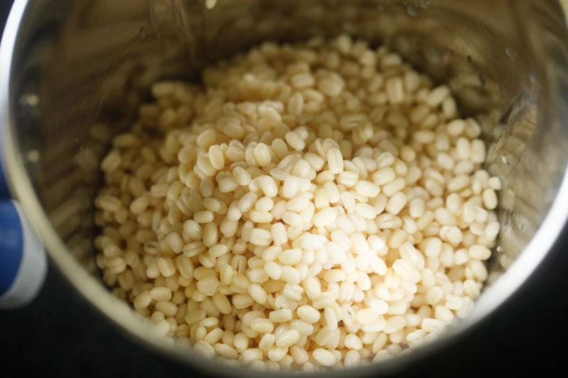
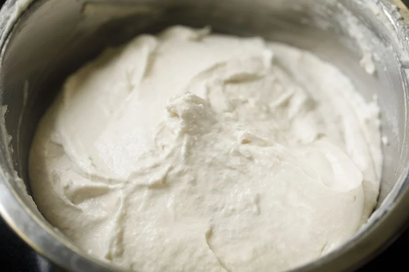
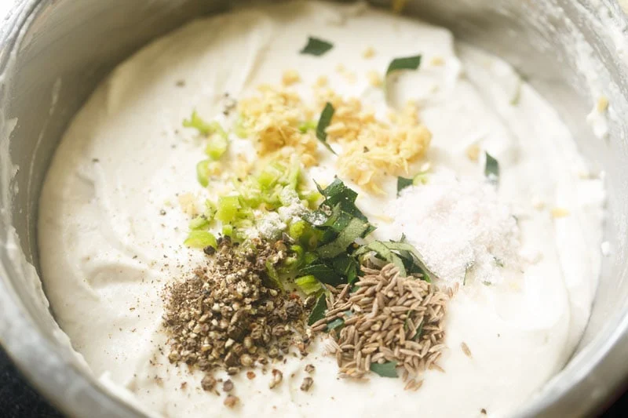
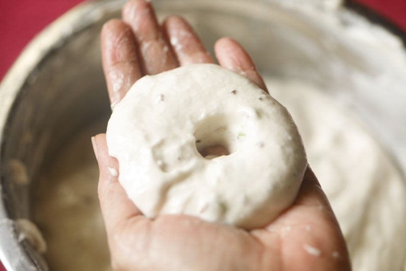
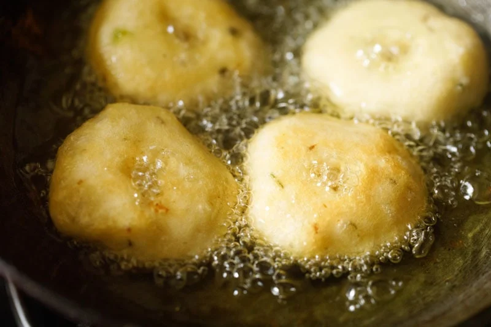
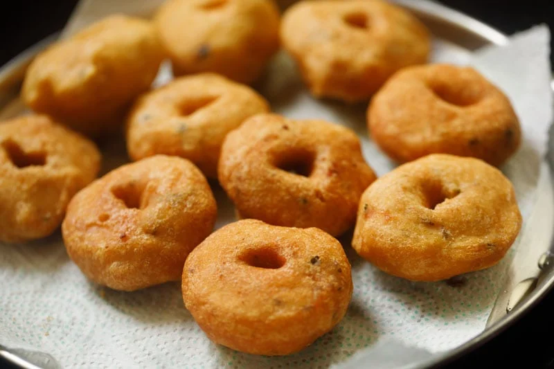
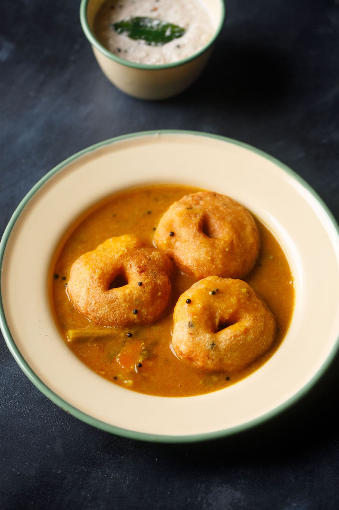

Making medu vada at home is simple once you get the batter and shaping
right. Start with good quality urad dal and always use fresh oil for
frying.
Follow the steps carefully, and you’ll get medu vadas that are crispy on
the outside and soft inside.
1. Rinse 1 cup urad dal (husked and split or whole black gram) a few times in water. Then soak the lentils in 2.5 to 3 cups water for at least 4 to 5 hours or up to overnight. Preferably use unpolished urad dal to make this vada recipe.
2. Drain and discard the water. Add the soaked urad dal to a grinder jar.
Add 3 to 4 tablespoons fresh water or as needed. Just be sure not to make
the batter too thin!
Do not add too much water while grinding. The batter should be like a soft
moist dough but yet light and fluffy.
It should end up looking like a cake batter rather than a crepe batter. I
recommend blending in steps and adding water as needed to achieve the
right consistency.

3. Begin to grind or blend the urad dal to a smooth batter. The batter
should be fluffy and thick.
You can grind in two batches or one lot depending on the capacity and size
of your blender or mixer-grinder.
Scrape down the sides of the blender as you go to ensure all the lentils
gets blended to a uniform consistency.
4. Continue to grind at intervals by scraping the sides with a spatula. If your mixer or grinder becomes hot, then wait for a few minutes until it cools down.
5. Continue to grind or blend until you achieve a smooth, fluffy batter. Remember there should be no fine grits or chunks of urad dal in the batter.
6. Remove the batter into a big bowl or vessel. Then briskly whip with a
spatula, spoon or a wired whisk for 2 to 3 minutes. This aerates the
batter and gives it a light, fluffy texture.
7. In the below photo you see the vada batter that has been aerated by
continuously whisking it for few minutes.

8. A quick way to check the perfect and right consistency of the batter is
to add a small spoon of it in a bowl of water. The batter should float and
remain intact. If it floats and does not get dissolved, then you have
achieved the right consistency.
In case it sinks, this means that your batter is not fluffy enough (with
not enough air bubbles trapped in it) or is too thin.
If the batter is too thin, then add some semolina (fine rava or suji) or
urad dal flour or rice flour to it to help thicken it up. Rava or suji
also helps in giving a crispy texture to the vada.
9. Measure and keep all the ingredients ready for making the batter. To
the batter, add the following spices and herbs:
1 tablespoon chopped curry leaves
1 teaspoon finely chopped green chillies
1 teaspoon finely chopped ginger
1 pinch asafoetida
½ teaspoon cumin seeds
½ teaspoon lightly crushed black pepper – can use whole peppercorns as
well. The addition of black pepper gives a good taste but is optional.
½ teaspoon salt or as required
You can also add ⅓ cup finely chopped onions or shallots, 2 tablespoons of
chopped coriander leaves and ¼ cup chopped fresh coconut pieces.v

10. Mix the batter well with the herbs, spices and salt. Check the taste
of the batter and, if needed, add some salt.
You do not have to ferment the batter. You can use it right away.
11. Take a bowl of water. Apply some water from the bowl on both your
palms. Take some batter in your right palm from the bowl. Give it a round
shape by moving it in a circular position in the right hand.
12. With your thumb make a hole in the center. You can also use banana
leaves or zip lock bags to give the medu vada its doughnut shape.

13. In a kadai, heat oil over medium heat. Once the oil becomes hot, slide
the medu vada gently into the hot oil. Do not overcrowd the pan. Work in
batches, considering the size of your pan as your guide.
14. Once the vada or garelu are slightly golden and the batter has firmed
up and looks crispy, then gently turn over with a slotted spoon and
continue to fry. The oil should not exceed 190 degrees celsius (375F), or
fall below 175 degrees celsius (350F).

15. Continue to fry the vada, turning over as needed.
16. Fry the medhu vadai till crisp and golden.
17. Once the medhu vadai is crisp and golden, then remove with a slotted
spoon to drain the extra oil. Fry the rest of vadai in the same manner.

18. Serve medu vada hot or warm with sambar or chutney of your choice. You can also pair these vadas with Tomato Chutney or Onion Chutney.
